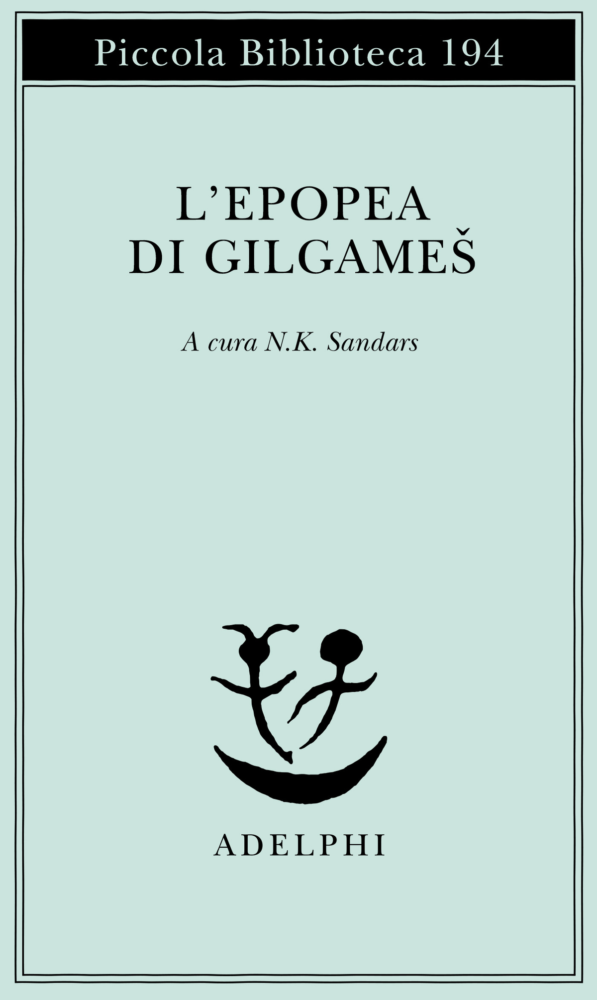
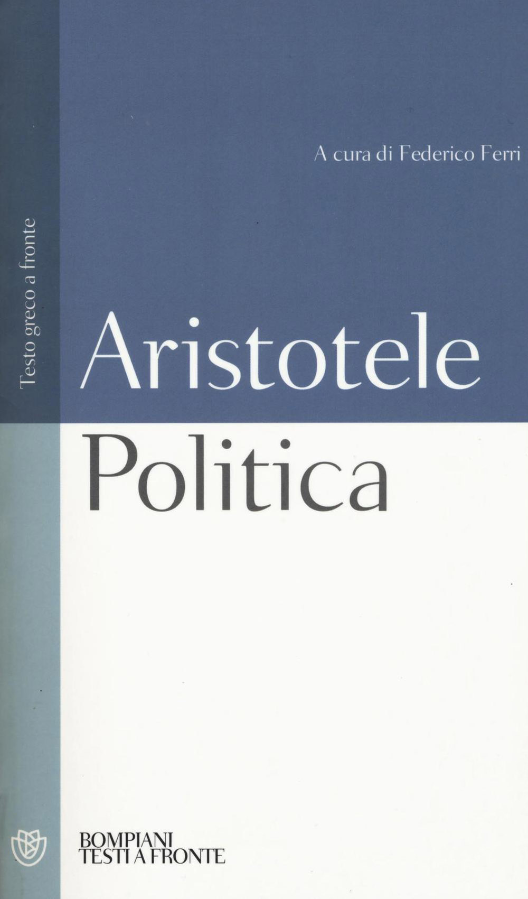
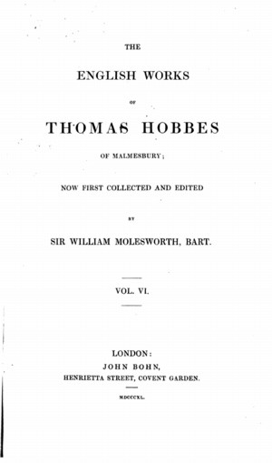
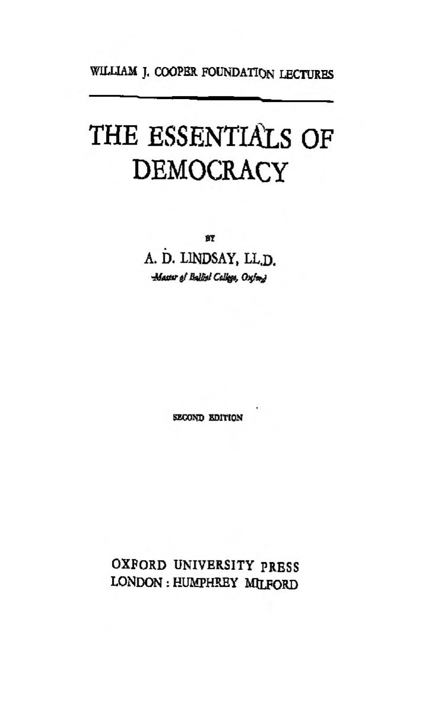

29:08 · 9 OPERE
Legge e ragione.
Il filo del discorso
Dr Divago presenta e legge un proprio saggio sul rapporto fra diritto e ragione. Il punto di partenza è che una società conserva coesione quando dispone di criteri condivisi per discutere e limitare l’arbitrio della forza. Epopea di Gilgameš, legislazione di Solone e tradizione aristotelica accompagnano questa domanda sulle origini della norma; la frase attribuita a Hobbes introduce il problema di quale ragione possa dirsi anima della legge.
Leggi la sintesi completaRiduci la sintesi
La lettura passa poi alla trasformazione graduale degli ordinamenti in strumenti di dominio, con riferimenti a fascismo, nazismo e al racconto di Solženicyn della repressione sovietica. Le Bon e Packard sono richiamati per il ruolo della persuasione, mentre Jaspers permette di interrogare l’università come luogo di ricerca della verità. La citazione di Lindsay collega democrazia e comprensione comune. Nella conclusione l’autore difende una legge ancorata a giustizia, uguaglianza e libertà: la mera promulgazione non la renderebbe moralmente giusta. È una tesi filosofica del relatore sul limite del potere; i confronti con il presente non accertano da soli illegalità di provvedimenti o un diritto generale a sottrarsi alla legge.
I libri nel discorso

L’epopea di Gilgameš
Note sul riferimento
Copertina: Adelphi, Piccola Biblioteca 194, 1986; a cura di N. K. Sandars, traduzione di Alessandro Passi.
Immagine autentica dell’opera, controllata visivamente; l’edizione di riferimento non è attribuita al filmato.
L’epopea di Gilgamesh è esplicitamente consigliata; nessun traduttore o editore pronunciato.

Politica
Identificazione probabile
Note sul riferimento
Copertina: Bompiani · Testi a fronte, 2016 · a cura di Federico Ferri
Immagine autentica dell’opera, controllata visivamente; l’edizione di riferimento non è attribuita al filmato.
Massima aristotelica sulla legge come ragione libera dalle passioni: riscontro probabile con Politica III,16,1287a, titolo non pronunciato.

A Dialogue between a Philosopher and a Student of the Common Laws of England
Identificazione probabile
Note sul riferimento
Frontespizio della raccolta English Works VI: The English Works of Thomas Hobbes, vol. VI, John Bohn, London, 1840, a cura di William Molesworth.
Frontespizio autentico della raccolta English Works VI, London, John Bohn, 1840, che comprende il Dialogue, Behemoth e altri scritti. Non è la copertina autonoma del Dialogue. La prima pubblicazione del dialogo è postuma, 1681; l’esemplare o la traduzione citata nel video non sono identificati.
Thomas Hobbes e reason is the soul of the law; rinvio probabile al Dialogue e al confronto con Coke, senza titolo nel parlato.

Arcipelago Gulag
Note sul riferimento
Copertina: Mondadori · Arcipelago Gulag · edizione di riferimento
Immagine associata all’ISBN di riferimento e controllata visivamente; edizione e traduzione non identificate come quelle citate o lette nel video.
Solženicyn, Arcipelago Gulag e anno 1973 esplicitamente citati.

Psicologia delle folle
Note sul riferimento
Copertina: Apogeo · 2025 · nuova traduzione dell’edizione integrale originale
Immagine autentica dell’opera, controllata visivamente; l’edizione di riferimento non è attribuita al filmato.
Le Bon, Psicologia delle folle e anno 1895 nominati.

I persuasori occulti
Note sul riferimento
Copertina: Einaudi · ET Saggi · 2015 · traduzione di Carlo Fruttero
Immagine autentica dell’opera, controllata visivamente; l’edizione di riferimento non è attribuita al filmato.
Titolo I persuasori occulti e Packard, nome deformato dalla trascrizione automatica.

L’idea di Università
Note sul riferimento
Copertina: Società Editrice Universo, 2021; testo del 1946, italiano e tedesco.
Copertina autentica della rielaborazione del 1946 nell’edizione SEU 2021, a cura di Vittoradolfo Tambone e Giampaolo Ghilardi, traduzione di Barbara Osimani, prefazione di Francesco Miano. Il video ricorda la versione del 1923: le redazioni non sono trattate come testi identici e la citazione orale non è stata collazionata integralmente con tutte le versioni. Edizione posseduta dal relatore non determinata.
Karl Jaspers, L’idea di università e anno 1923 espliciti; non identificata la redazione o traduzione della citazione.

Bhagavadgītā
Identificazione probabile
Note sul riferimento
Copertina: Adelphi, gli Adelphi 29, 1991; a cura di Anne-Marie Esnoul, traduzione di Bianca Candian.
Immagine autentica dell’opera, controllata visivamente; l’edizione di riferimento non è attribuita al filmato.
Morte distruttrice di mondi nel ricordo attribuito a Oppenheimer; probabile Bhagavadgītā XI,32, titolo non pronunciato.

The Essentials of Democracy
Note sul riferimento
Frontespizio della seconda edizione: Oxford University Press, Humphrey Milford; frontespizio di seconda edizione, anno della copia non accertato.
Frontespizio autentico, William J. Cooper Foundation Lectures, Second Edition; scansione proveniente dalla Central Library, Delhi University. L’anno non è leggibile su questa pagina. Il deposito descrive l’opera come 1929 ma questo dato non basta a datare l’esemplare di seconda edizione. Non è una copertina esterna e non si afferma che sia la copia citata.
Alexander Dunlop Lindsay, The Essentials of Democracy e anno 1929 espliciti.